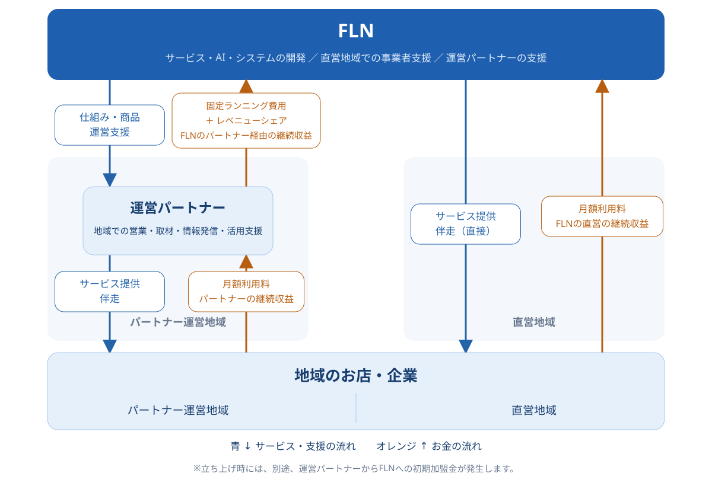

地域事業者支援
まいぷれへの掲載、AIによる発信支援、運用代行を組み合わせ、お店の魅力を届けます。月額型サービスと地域の担当者による支援が事業の中心です。
まいぷれを見るFLNは、地域情報プラットフォーム「まいぷれ」を基盤に、情報発信と日々の経営を支えます。地域の担当者が捉えるお店の課題に、共通システムとAIで応える。地域に根ざした支援を、全国へ広げる会社です。
まいぷれへの掲載、AIによる発信支援、運用代行を組み合わせ、お店の魅力を届けます。月額型サービスと地域の担当者による支援が事業の中心です。
まいぷれを見るまいぷれくんで培った技術と運用ノウハウを、OEMや企業専用AIへ展開。地域活性AIテクノロジーズの専門性も活かします。
AIの取り組みを見る直営地域では店舗から月額利用料を受領。パートナー運営地域では、FLNがサービス基盤を提供し、固定ランニング費用とレベニューシェアを受領します。

↓ 提供するもの情報発信・活用支援
↑ 受け取る対価月額利用料
↓ 提供するものサービス基盤・運営支援
↑ 受け取る対価固定ランニング費用
＋レベニューシェア
↓ 提供するもの情報発信・活用支援
↑ 受け取る対価月額利用料
運営開始時：パートナーからFLNへ初期加盟金（一時的な対価）
図は直営・運営パートナーによる提供を対象とし、OEMは含みません。初期加盟金は一時的な対価です。費用・収益分配の条件は契約により異なります。運営パートナーのご案内
FLNは商品開発とシステム・運営支援を担い、各地の運営パートナーが営業・取材・活用支援を担います。直営で磨いたサービスと各地の経験を共有し、地域密着の支援を全国へ展開します。
運営パートナー138社・契約エリア893市区町村（2026年5月末）。決算説明資料
運営パートナーについてCASE / 現場での変化

東京都江戸川区／広告・デザイン・制作
折込広告に続く事業を模索し、Webのノウハウ不足が課題だった同社。まいぷれのノウハウ提供とサポートを受け、2014年に運営を開始しました。紙媒体とWebを組み合わせて地域との接点を増やし、契約するお店の業種も広がったと紹介されています。
運営パートナーの取り組みを読む公開インタビューを要約。内容は取材時点のものです。個別の事例であり、同様の成果を保証するものではありません。
利用店舗数・利用単価・継続率を成長の軸とし、サービスと支援体制を磨きます。
01 / REACH
直営・パートナーの提案に加え、OEMで協業先の顧客基盤へ展開します。
02 / VALUE
発信支援・AI・運用代行を課題に合わせて組み合わせ、店舗あたりの提供価値を広げます。
03 / CONTINUITY
地域の担当者による支援と機能改善を重ね、日々の仕事に定着させます。
共通システムとAIで支援の効率を高め、担当者が対話や提案に力を注げる体制へ。海外では、日本で磨いた仕組みを現地の文化や商習慣に合わせて展開します。
自治体とともに、情報発信、地域ポイント、地域DXなどを通じて地域課題に向き合います。
公共ソリューションのご相談Nativ.mediaやまちスパチャなどを通じ、地域の仕事・人・活動と、地域外の人々をつなぎます。
関係人口事業のご相談